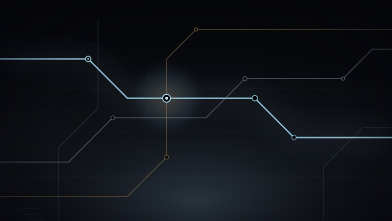
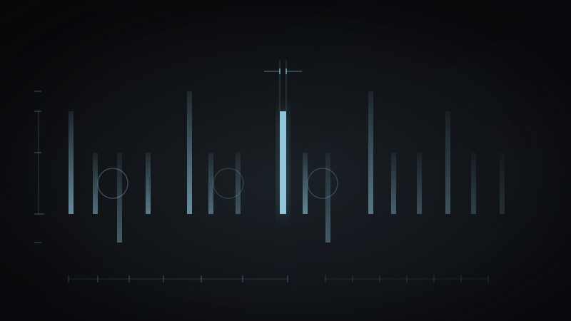
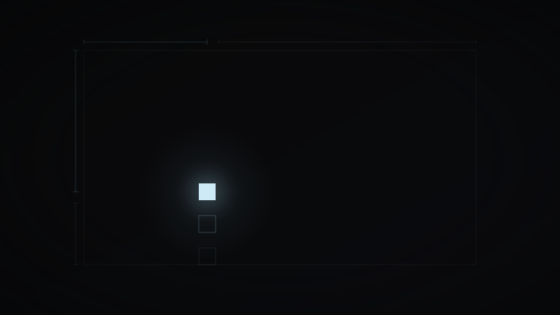

デザインシステムを0から構築する — 実践的アプローチ
スタートアップにおいてデザインシステムをゼロから立ち上げた経験から学んだこと。
05 Articles

Featured
Process監査、Design Tokens、コンポーネント化、そして運用のリアル。教科書通りにはいかなかった半年間を、フェーズごとに振り返る。
スタートアップにおいてデザインシステムをゼロから立ち上げた経験から学んだこと。

渋谷、新宿、六本木。東京のクラブシーンが私のデザインに与え続けるもの。

たった1pxの違いが、テキストの印象を完全に変える。タイポグラフィへの偏執的なこだわり。

「もっとポップに」「なんかいい感じに」を翻訳するためのフレームワーク。

何も置かないことで生まれる緊張感。余白はデザインの沈黙ではなく、最も雄弁な要素だ。
No articles in this tag — see Short Notes below.
完璧なグリッドシステムは、それを破るためにある。ルールを知らなければ、破ることもできない。
2025.03.20深夜3時に見る東京の高速道路。あの光の川みたいな流れが、今日のプロジェクトの答えになった。
2025.03.10デザインはコミュニケーションだ。見た目ではない。見た目はその結果に過ぎない。
2025.02.15ラフスケッチは汚くていい。むしろ汚い方がいい。清書への恐れを消してくれるから。
2025.01.30ガラス越しの東京タワー。透けて見えるものの方が、直接見るより美しいことがある。
2024.12.28色を選ぶとき、私はいつも感情から入る。この色は静寂か、緊張か、それとも期待か。
2024.11.05